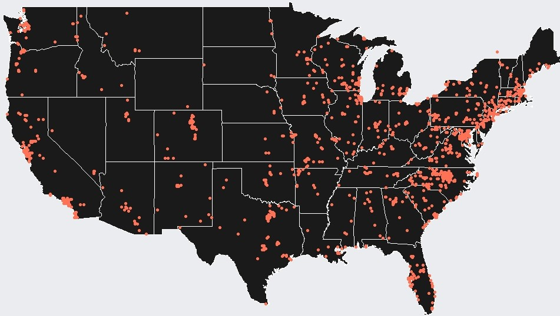

Microbial Inference
My adventure in data science began in February 2017 in the North Carolina State University Department of Statistics after searching
around for an internship in a variety of fields. Professor Brian Reich gave me an individual project dealing with microbial fungi, a
dataset funded by the Department of Defense that former graduate student Neil Grantham was overseeing and working on. The now-Dr. Neil
Grantham helped me learn R, my first coding language, and the basic statistics principles.
The dataset comprised over 2,000 fungal and bacterial swabs from homes across the U.S. and the world. My project was to use the
U.S. fungal swabs to try and predict features about the home where it was taken, including physical aspects of the house, the surrounding
environment, and characteristics of the residents. Using a logistic regression model with LASSO to hande the thousands of different types
of fungi, I was able to predict a number of features with >90% accuracy.

I presented my findings in a research poster at the 2017 State of North Carolina Undergraduate Research and Creativity Symposium titled
“Inferring Home Features from Indoor and Outdoor Microbial Fungi”, which you can download a PDF of
here.